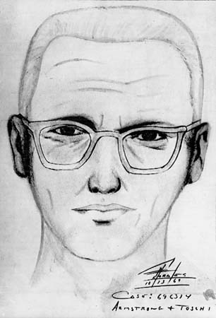

The Zodiac Killer is the pseudonym of an unidentified serial killer who operated in Northern California from at least the late 1960s to the early 1970s.
The name "Zodiac" was originated in a series of taunting letters sent to the local Bay Area press.
These letters included four ciphers. Only one has been definitively solved.
The killer's identity remains unknown.

A sketch of what the Zodiac is predicted to look like.